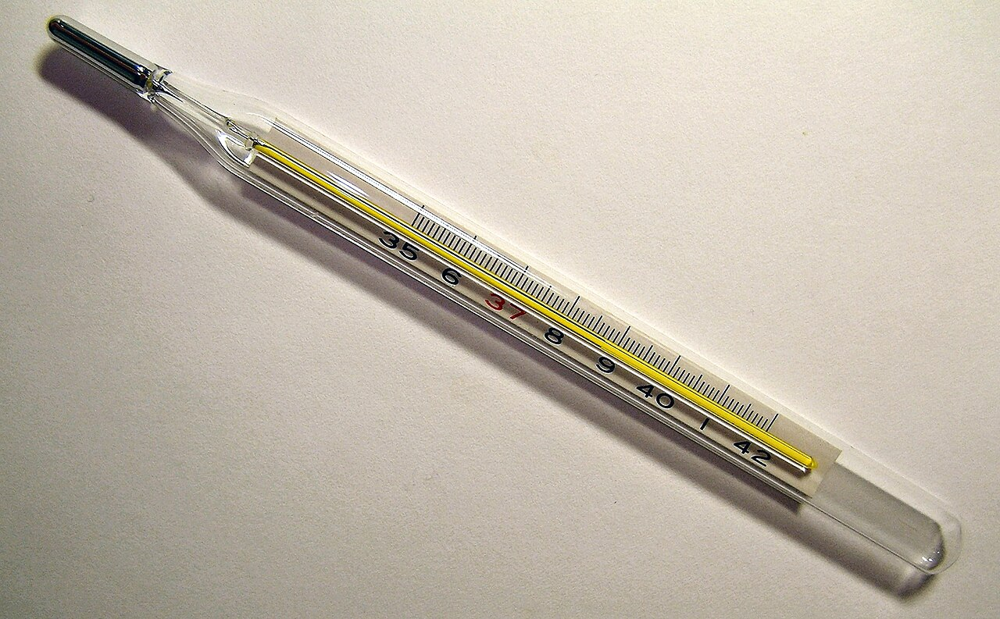

体液调节与神经调节的关系
本期导读
二者的关系 · 体温调节 · 水盐平衡

视频原话 · 导读3 句
- 同学们好！这节课梳理人教版选择性必修一第三章第三节——体液调节与神经调节的关系。9.1s
- 这一节是第三章的综合，高考常考两种调节的比较、体温调节和水盐平衡调节，还常出曲线题。9.4s
- 我们按十个考点梳理，每个考点都讲清楚怎么考、怎么做。5.5s
体液调节的概念01#
激素等化学物质，通过体液传送的方式对生命活动进行调节 → 体液调节
激素（主要）
组胺
气体分子（如NO）
CO₂等代谢产物
- 血液中CO₂浓度升高
- →刺激呼吸中枢
- →呼吸加深加快
考法
临床输氧时常混入约5%的CO₂，目的是刺激呼吸中枢
视频原话3 句
- 考点一，体液调节。激素等化学物质，通过体液传送的方式对生命活动进行调节，叫作体液调节。10.0s
- 激素调节是体液调节的主要内容；除了激素，组胺、某些气体分子，以及CO2等代谢产物，也能参与体液调节。11.0s
- 考法：血液中CO2浓度升高，会刺激呼吸中枢，使呼吸加深加快。所以给病人输氧时，常混入约5%的CO2。12.5s
两种调节的比较02#
| 比较项目 | 神经调节 | 体液调节 |
|---|---|---|
| 作用途径 | 反射弧 | 体液运输 |
| 反应速度 | 迅速 | 较缓慢 |
| 作用范围 | 准确、比较局限 | 较广泛 |
| 作用时间 | 短暂 | 比较长 |
考法
“反应快、时间短” → 神经调节；“反应慢、范围广、时间长” → 体液调节
视频原话5 句
- 考点二，体液调节和神经调节的比较，从四个方面看。5.3s
- 作用途径：神经调节通过反射弧，体液调节通过体液运输。6.2s
- 反应速度：神经调节迅速，体液调节较缓慢。4.9s
- 作用范围：神经调节准确、比较局限，体液调节较广泛；作用时间：神经调节短暂，体液调节比较长。10.4s
- 考法：题目描述“反应快、时间短”，是神经调节；“反应慢、范围广、持续时间长”，是体液调节。9.5s
两种调节的联系03#
考法
动物的生命活动，通常是神经调节和体液调节共同作用的结果
视频原话3 句
- 考点三，二者的联系。一方面，不少内分泌腺直接或间接地受中枢神经系统的调节，这时体液调节可以看作神经调节的一个环节。12.6s
- 另一方面，激素也能影响神经系统的发育和功能。比如幼年缺乏甲状腺激素，会影响脑的发育；成年时甲状腺激素不足，神经系统的兴奋性会降低。14.5s
- 考法：动物的生命活动，通常是神经调节和体液调节共同作用的结果。7.0s
寒冷时的体温调节04#
体温稳定：产热量 = 散热量
- 寒冷
- →皮肤冷觉感受器
- 下丘脑体温调节中枢
- 减少散热
- 皮肤血管收缩
- 汗腺分泌减少
- 增加产热
- 骨骼肌战栗
- 甲状腺激素、肾上腺素↑
- 大脑皮层：冷觉
- 主动添加衣物
- 减少散热
易错
寒冷时体温依然稳定：产热和散热都比炎热时多，二者仍然相等
视频原话5 句
- 考点四，体温调节。体温相对稳定，是因为产热量等于散热量。6.7s
- 寒冷时，皮肤的冷觉感受器兴奋，兴奋传到{下丘脑的体温调节中枢|brown}。6.9s
- 一方面减少散热：皮肤血管收缩，汗腺分泌减少；另一方面增加产热：骨骼肌战栗，甲状腺激素和肾上腺素分泌增多，细胞代谢增强。13.4s
- 同时，兴奋传到大脑皮层产生冷觉，人会主动添加衣物。5.9s
- 易错：寒冷环境中体温依然稳定，产热和散热都比炎热时多，二者仍然相等。7.9s
炎热时的体温调节05#
- 炎热
- →皮肤热觉感受器
- 下丘脑体温调节中枢
- 增加散热
- 皮肤血管舒张
- 汗腺分泌增加（汗液蒸发为主）
- 增加散热
安静时产热：肝脏等器官
运动时产热：骨骼肌
炎热时散热主要靠汗液蒸发
易错
体温调节中枢在下丘脑；冷觉、热觉在大脑皮层形成
视频原话4 句
- 考点五，炎热环境。皮肤的热觉感受器兴奋，经下丘脑体温调节中枢，使皮肤血管舒张、汗腺分泌增加，散热增加。12.1s
- 炎热时增加散热，主要靠汗液蒸发。3.9s
- 人体的热量来自细胞代谢：安静时主要来自肝脏等器官，运动时主要来自骨骼肌。8.2s
- 易错：体温调节中枢在{下丘脑|brown}，而冷觉、热觉在大脑皮层形成。7.0s
抗利尿激素与水平衡06#
饮水不足 / 失水过多 / 食物过咸 → 细胞外液渗透压↑
- 下丘脑渗透压感受器
- 大脑皮层：渴觉
- 主动饮水
- 抗利尿激素↑下丘脑合成，垂体释放
- 肾小管、集合管重吸收水↑
- 尿量↓
- 肾小管、集合管重吸收水↑
- 大脑皮层：渴觉
→ 渗透压恢复正常
易错
抗利尿激素由下丘脑合成，垂体释放，不是“垂体合成”
视频原话5 句
- 考点六，水盐平衡调节。饮水不足、失水过多或吃的食物过咸时，细胞外液渗透压升高。9.5s
- {下丘脑|brown}中的{渗透压感受器|brown}受到刺激，一方面把兴奋传到大脑皮层，产生渴觉，人主动饮水；9.2s
- 另一方面，由{下丘脑合成、分泌|brown}，再由垂体释放的抗利尿激素增加。6.8s
- 抗利尿激素促进肾小管和集合管对水的重吸收，尿量减少，细胞外液渗透压随之降低。8.9s
- 易错：抗利尿激素由下丘脑合成，垂体只是释放，不要说成“垂体合成”。7.4s
醛固酮：保钠排钾07#
- 细胞外液量↓ 或 血钠↓
- →肾上腺皮质
- →醛固酮↑
- →肾小管、集合管重吸收Na⁺↑
- 血钾↑
- →醛固酮↑
- →促进K⁺排出
保钠排钾
记忆
醛固酮“保钠排钾”，由肾上腺皮质分泌（不是肾上腺髓质）
视频原话3 句
- 考点七，醛固酮。当细胞外液量减少，或者血钠含量降低时，肾上腺皮质分泌醛固酮增加。9.7s
- 醛固酮促进肾小管和集合管对Na+的重吸收，维持血钠含量的平衡；血钾含量升高时，醛固酮还能促进K+的排出。11.8s
- 记忆方法：醛固酮“保钠排钾”。注意它由肾上腺皮质分泌，不是肾上腺髓质。7.6s
下丘脑的四大作用08#
下丘脑：神经调节与体液调节的枢纽
1. 感受
渗透压感受器
2. 传导
把兴奋传到大脑皮层（产生渴觉）
3. 分泌
抗利尿激素、多种促激素释放激素
4. 调节中枢
体温、水平衡、血糖调节中枢
考法
问“下丘脑的作用”，从感受、传导、分泌、调节四个方面去找
视频原话4 句
- 考点八，下丘脑在稳态调节中的作用，可以概括为四个方面。5.8s
- 一是{感受|brown}：有渗透压感受器；二是{传导|brown}：把渗透压感受器产生的兴奋传到大脑皮层；8.6s
- 三是{分泌|brown}：分泌抗利尿激素和多种促激素释放激素；四是{调节中枢|brown}：有体温调节中枢、水平衡调节中枢和血糖调节中枢。12.6s
- 考法：题目问“下丘脑的作用”，就从感受、传导、分泌、调节这四个方面去找。7.8s
尿量与激素的曲线09#
饮大量清水 → 渗透压↓ → 抗利尿激素↓ → 尿量↑（约1 h达高峰）
饮等量生理盐水 → 渗透压基本不变 → 尿量变化不大
解题方法
抗利尿激素与尿量变化相反：激素多 → 尿少；激素少 → 尿多
视频原话3 句
- 考点九，曲线题。一次饮用大量清水后，细胞外液渗透压降低，抗利尿激素分泌减少，尿量增加，大约一小时后达到高峰，然后逐渐恢复。13.8s
- 如果饮用的是等量的生理盐水，渗透压基本不变，尿量变化不大。6.2s
- 解题方法：抗利尿激素和尿量的曲线变化相反：激素多，尿就少；激素少，尿就多。8.8s
发热时的产热散热10#
| 阶段 | 产热与散热 |
|---|---|
| 体温上升期 | 产热 ＞ 散热 |
| 高温持续期 | 产热 ＝ 散热 |
| 体温下降期 | 产热 ＜ 散热 |
解题方法
看体温的变化方向：升 → 产热＞散热；稳 → 相等；降 → 产热＜散热。体温稳定（无论高低），产热都等于散热
视频原话5 句
- 考点十，例题：发热时，体温的变化可以分为三个阶段。5.8s
- 体温上升期：产热量大于散热量，病人常感到冷、打寒战。6.0s
- 高温持续期：体温维持在较高水平，产热量等于散热量。6.0s
- 体温下降期：产热量小于散热量，病人大量出汗，皮肤血管舒张。6.7s
- 解题方法：体温升高，产热大于散热；体温稳定，二者相等；体温下降，产热小于散热。只要体温稳定，无论高低，产热都等于散热。13.3s
易错速查✓
先自己判断，再点按钮查看对错与解析。
- 1体液调节就是激素调节说法错误：还包括CO₂等其他化学物质的调节
- 2神经调节反应迅速，作用范围准确、比较局限说法正确。
- 3寒冷时散热量比炎热时少说法错误：寒冷时产热、散热都比炎热时多
- 4抗利尿激素由垂体合成说法错误：由下丘脑合成，垂体释放
- 5醛固酮的作用是保钠排钾说法正确。
- 6发热的高温持续期，产热量大于散热量说法错误：产热量等于散热量
体温看产热散热，水盐看抗利尿激素！
视频原话 · 易错速查5 句
- 最后，用六道判断题检验一下。3.6s
- 体液调节就是激素调节？错，还包括CO2等其他化学物质的调节。神经调节反应迅速，作用范围准确、比较局限？对。13.2s
- 寒冷时散热量比炎热时少？错，寒冷时产热、散热都更多。抗利尿激素由垂体合成？错，由下丘脑合成，垂体释放。13.1s
- 醛固酮的作用是保钠排钾？对。发热的高温持续期，产热量大于散热量？错，二者相等。10.1s
- 十个考点串起来：先比较两种调节，再抓住下丘脑这个枢纽，体温看产热和散热，水盐看抗利尿激素和醛固酮。掌握这些，第三章就能稳稳拿分！我们下期再见！16.2s
图片来源
图片来源：Wikimedia Commons —— Menchi《Clinical thermometer 38.7》CC BY-SA 3.0
Photo: Menchi, CC BY-SA 3.0